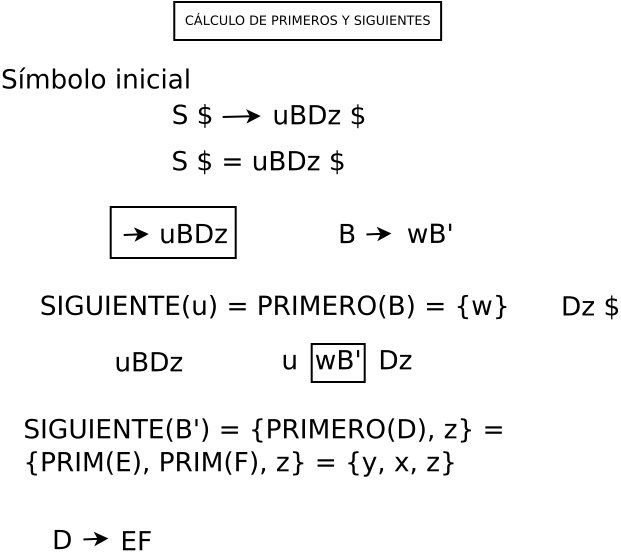
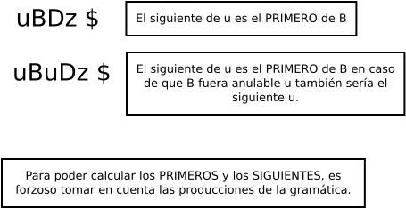

Proceso de construcción del analizador LL(1)
Funcionamiento del analizador sintáctico descendente. La entrada de un anlizador sintáctico son los tokens entregados por el analizador léxico. La función del analizador sintactico es colocar los tokens en una posición que cumpla con las reglas de sintáxis, que son expresadas por medio de gramáticas libres de contexto.
Proceso de adaptación de la gramática
Los problemas de las gramáticas:
| Número | Problema |
|---|---|
| 1 | Recursión o recursividad izquierda. |
| 2 | Ambigüedad. |
| 3 | Retroceso (backtracking). |
Si la gramática tiene problemas se debe acondicionar para que cumpla con las reglas siguientes:
- Primero
- Regla UNO. Si las producciones tienen la forma A → σ1 |σ2 |σ3 deben cumplir con la condición PRIMERO(σ1 ) ∩ PRIMERO(σ2 ) ∩ PRIMERO(σ3 ) = ∅.
- Segundo
- Regla DOS. Si las producciones tienen la forma X → σ|ε deben cumplir con la condición PRIMERO(X) ∩ SIGUIENTE(X) = ∅.
Ejemplo de construcción del analizador LL(1)
Tenemos la siguiente gramatica libre de contexto:
S → uBDz
B → w|Bv
D → EF
E → y|ε
F → x|ε
La gramática cumple con las reglas:
Se usa la siguiente tabla de primeros y siguientes:
| S | B | B' | D | E | F | |
|---|---|---|---|---|---|---|
| PRIMEROS | u | w, PRIM(B) | v, ε | y, x | y, ε | x, ε |
| SIGUIENTES | $ | y, x, z | y, x, z | z | x, z | z |
La forma general de la recursividad izquierda en las producciones de la gramática, es:
A → A α | β
La transformación que se utiliza para corregir la recursividad izquierda, es la siguiente:
A → β A'
A' → α A' | ε
La gramática corregida es la siguiente:
1.- S → uBDz
2.- B → wB'
3.- B' → vB'
4.- B' → ε
5.- D → EF
6.- E → y
7.- E → ε
8.- F → x
9.- F → ε

Cuando se corrige la gramática la tabla de primeros y siguientes es de la siguiente forma:
| S | B | B' | D | E | F | |
|---|---|---|---|---|---|---|
| PRIMEROS | u | w | v, ε | y, x | y, ε | x, ε |
| SIGUIENTES | $ | y, x, z | y, x, z | z | x, z | z |
La tabla LL(1) que se obtiene es la siguiente:
| NO TERMINALES | u | w | v | y | x | z | $ |
|---|---|---|---|---|---|---|---|
| S | 1 | e | e | e | e | e | e |
| B | e | 2 | e | e | e | e | e |
| B' | e | e | 3 | 4 | 4 | 4 | e |
| D | e | e | e | 5 | 5 | e | e |
| E | e | e | e | 6 | 7 | 7 | e |
| F | e | e | e | e | 8 | 9 | e |
El análisis de la cadena de tokens uwvyxz, se hace considerando una función de lectura de la cadena de tokens y una pila para guardar la parte izquierda de la producción, y por otro lado la función que guarda la tabla. A continuación se muestra la tabla de análisis de la cadena de tokens:
| ENTRADA | PILA | NUM. PRODUCCIÓN |
|---|---|---|
| ↑ uwvyxz$ | $S | 1 |
| ↑ uwvyxz$ | $zDBu | ← |
| u↑wvyxz$' | $zDB | 2 |
| u↑wvyxz$ | $zDB'w | ← |
| uw↑vyxz$ | $zDB' | 3 |
| uw↑vyxz$ | $zDB'v | ← |
| uwv↑yxz$ | $zDB' | 4 |
| uwv↑yxz$ | $zD | 5 |
| uwv↑yxz$ | $zFE | 6 |
| uwv↑yxz$ | $zFy | ← |
| uwvy↑xz$ | $zF | 8 |
| uwvy↑xz$ | $zx | ← |
| uwvyx↑z$ | $z | ← |
| uwvyxz↑$ | $ | Acep |


Ejemplo de analizador sintáctico LL(1)
Se tiene la declaración de clase muy general:
public class {double radio;}
La gramática que expresa la declaración de una clase.
S → public class {T LV ;} | private class {T LV ;}
T → int | double
LV → LV, V | V
V → id
A → A α | β
Primero. Se aplican las reglas UNO y DOS:
La producción 3 tiene el problema de la recursividad izquierda. Por lo que se le aplica la transformación.
A → β A'
A' → α A' | ε
De la cual se obtienen las siguientes igualdades:
A = LV
A' = LV'
α = ,V
β = V
Así que la producción 3 queda de la siguiente forma:
LV → V LV'
LV' → , V LV' | ε
La gramática queda de la siguiente forma:
S → public class {T LV ;} | private class {T LV ;}
T → int | double
LV → V LV'
LV' → , V LV' | ε
V → id
Se calculan los primeros y siguientes.
| S | T | LV | V | LV' | |
|---|---|---|---|---|---|
| PRIMEROS | public, private | int, double | id | id | , , ε |
| SIGUIENTES | $ | id | ; | , , ; | ; |
La gramática expandida se muestra a continuación:
1.- S → public class {T LV ;}
2.- S → private class {T LV ;}
3.- T → int
4.- T → double
5.- LV → V LV'
6.- LV' → , V LV'
7.- LV' → ε
8.- V → id
La tabla LL(1), es la siguiente:
| NO TERMINALES | public | private | class | int | double | id | , | ; | $ |
|---|---|---|---|---|---|---|---|---|---|
| S | 1 | 2 | e | e | e | e | e | e | e |
| T | e | e | e | 3 | 4 | e | e | e | e |
| LV | e | e | e | e | e | 5 | e | e | e |
| V | e | e | e | e | e | 8 | e | e | e |
| LV' | e | e | e | e | e | e | 6 | 7 | e |
La tabla de análisis de la cade tokens:
| ENTRADA | PILA | NUM. PRODUCCIÓN |
|---|---|---|
| ↑ public class {double radio;}$ | $ ● S | 1 |
| ↑ public class {double radio;}$ | $};LV T{ class ● public | ← |
| public ↑class {double radio;}$ | $};LV T{ ● class public | ← |
| public class ↑{double radio;}$ | $};LV T●{ class public | ← |
| public class {↑double radio;}$ | $};LV ●T{ class public | 4 |
| public class {↑double radio;}$ | $};LV ●double{ class public | ← |
| public class {double ↑radio;}$ | $};●LV double{ class public | 5 |
| public class {double ↑radio;}$ | $};LV'● V double{ class public | 8 |
| public class {double ↑radio;}$ | $};LV' ● radio double{ class public | ← |
| public class {double radio↑;}$ | $};●LV' radio double{ class public | 7 |
| public class {double radio↑;}$ | $}●; ε radio double{ class public | ← |
| public class {double radio;↑}$ | $●}; ε radio double{ class public | ← |
| public class {double radio;}↑$ | ●$}; radio double{ class public | Acep |